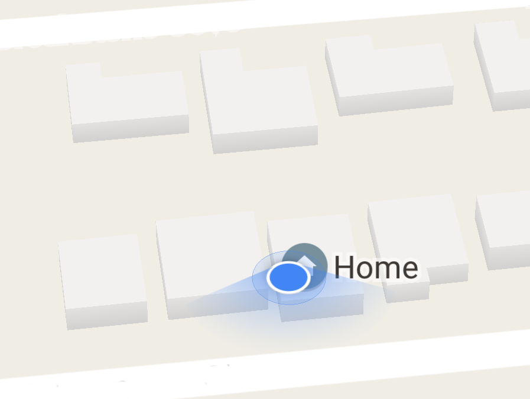
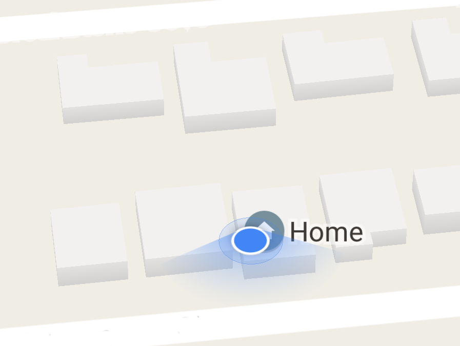

The Technology
Augmented reality uses technologies and techniques from a wide variety of other fields.
The most widespread applications of augmented reality today are built on top of smartphones; these devices combine a number of useful sensors into a convenient handheld package: accelerometers, gyroscopes, high-quality cameras, GPS units, and more are all commonly included in almost every smartphone on the market. Furthermore, smartphones are also equipped with Internet connectivity and a number of user interaction mechanisms: touchscreens, speakers, microphones, etc.
Almost all augmented reality applications rely on fast and powerful image processing. This processing, known as computer vision (CV for short) allows applications to correlate what is seen through the camera to real world geometry. The algorithms and techniques of computer vision are not only used in augmented reality, however: computer vision is also used in fields like automated quality control, robot navigation, and web search-- in short, any process that requires visual input or inspection can use computer vision.
Insert stuff here.